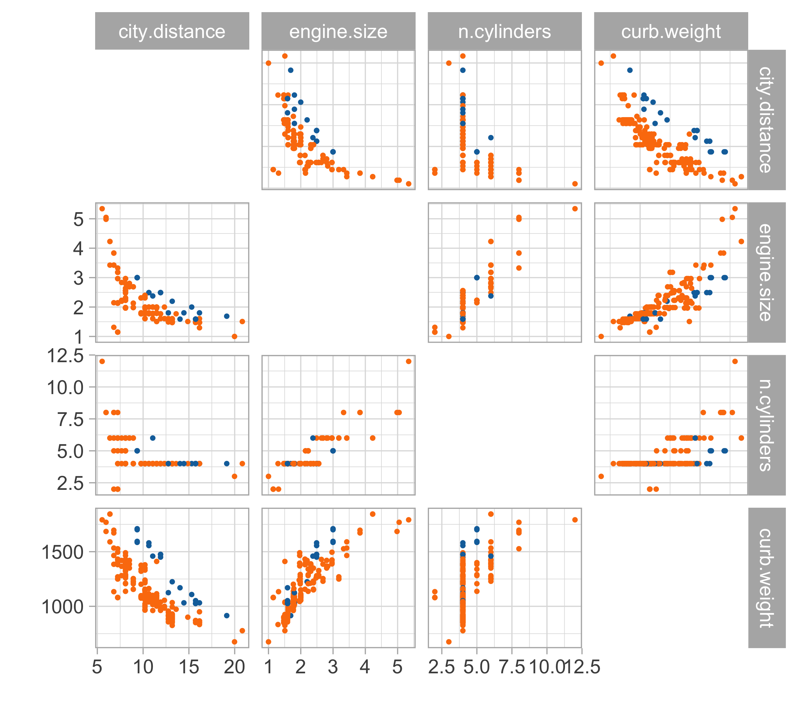
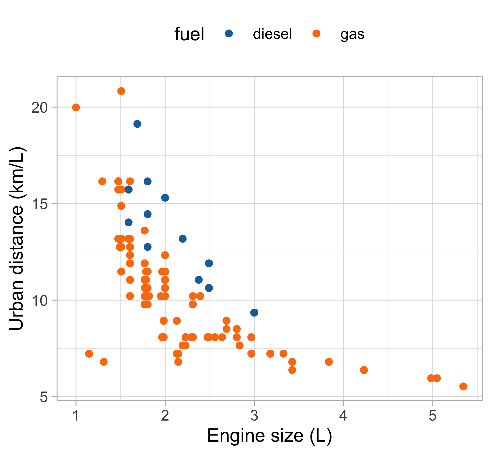
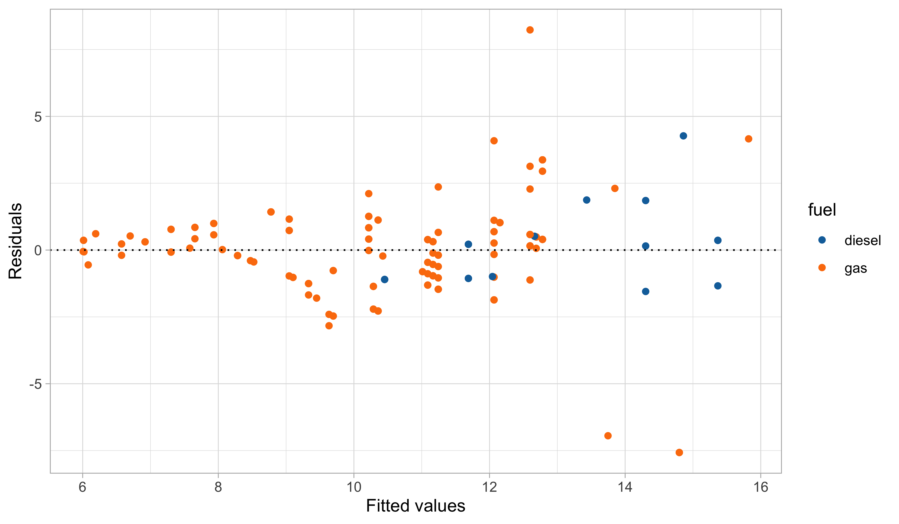
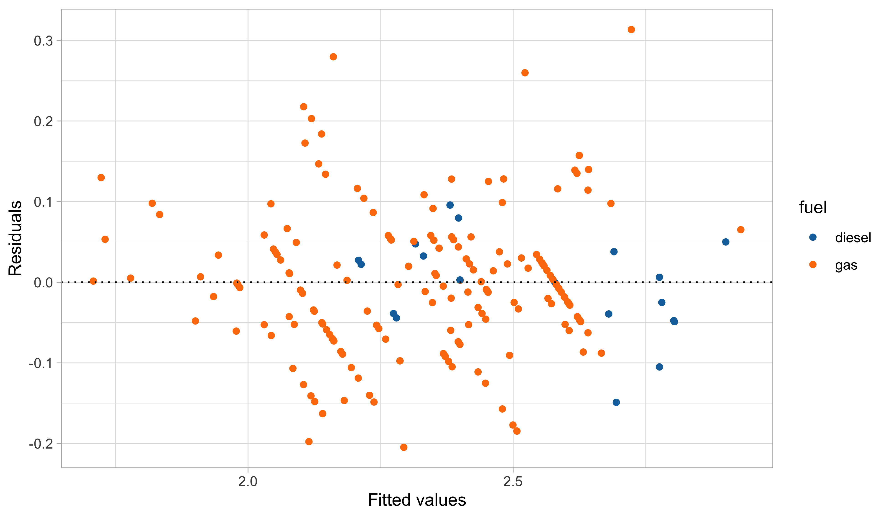
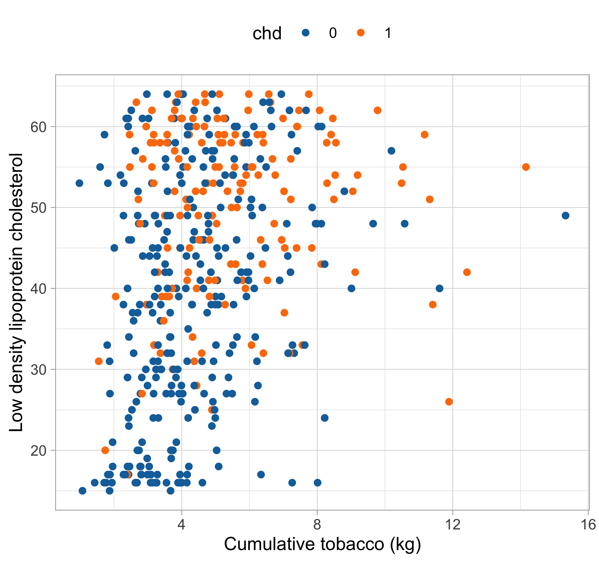
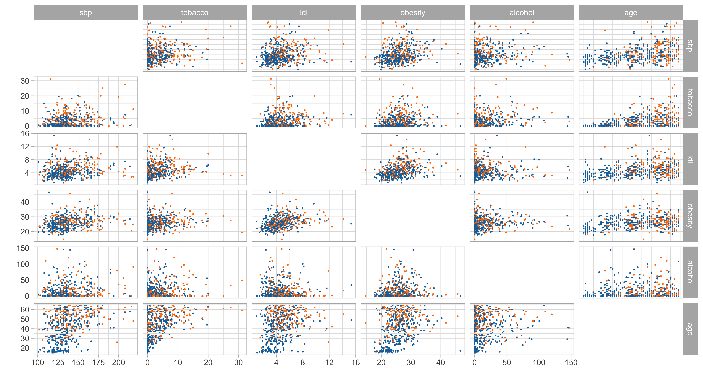
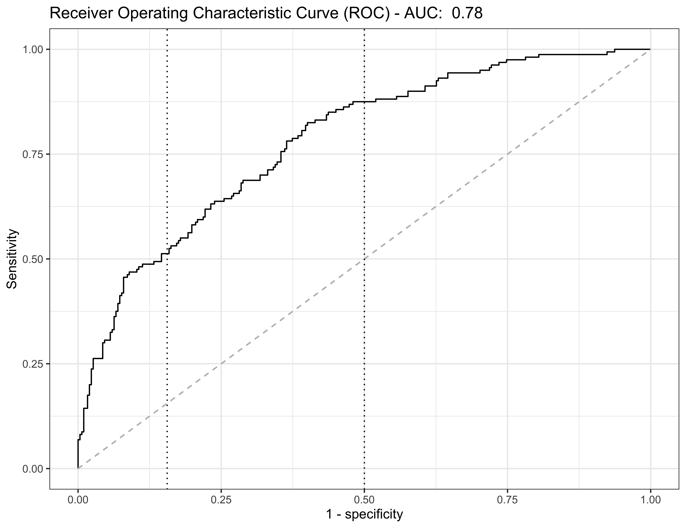

A-B-C
Data Mining - CdL CLAMSES
Tommaso Rigon
Università degli Studi di Milano-Bicocca
Homepage
“Everything should be made as simple as possible, but not simpler” Attributed to Albert Einstein
In this unit we will cover the following topics:
- Linear models and the modelling process
- Cholesky factorization
- Orthogonalization and QR decomposition
- Iterative methods
- Generalized linear models
The computational aspects of linear models will be novel to most of you…
… but you should be already very familiar with linear models!
Old friends: linear models
Car data (diesel or gas)
- We consider data for n = 203 models of cars in circulation in 1985 in the USA.
- We want to predict the distance per unit of fuel, as a function of the vehicle features.
- We consider the following variables:
- The city distance per unit of fuel (km/L,
city.distance) - The engine size (L,
engine.size) - The number of cylinders (
n.cylinders) - The curb weight (kg,
curb.weight) - The fuel type (gasoline or diesel,
fuel).
- The city distance per unit of fuel (km/L,
Linear regression

Let us consider the variables
city.distance(y),engine.size(x) andfuel(z).A simple linear regression Y_i = \beta_1 + \beta_2 x_i + \epsilon_i, \qquad i=1,\dots,n, could be easily fit by least squares…
… but the plot clearly suggests that the relationship between
city.distanceandengine.sizeis not well approximated by a linear function.… and also that
fuelhas an non-negligible effect on the response.
Regression models
A general and more flexible formulation for modeling the relationship between a vector of fixed covariates \bm{x}_i = (x_{i1},\dots,x_{ip})^T \in \mathbb{R}^p and a random variable Y_i \in \mathbb{R} is Y_i = f(\bm{x}_i; \beta) + \epsilon_i, \qquad i=1,\dots,n, where the “errors” \epsilon_i are iid random variables, having zero mean and variance \sigma^2.
To estimate the unknown parameters \beta, a possibility is to rely on the least squares criterion: we seek the minimum of the objective function D(\beta) = \sum_{i=1}^n\{y_i - f(\bm{x}_i; \beta)\}^2, using n pairs of covariates \bm{x}_i = (x_{i1},\dots,x_{ip})^T and the observed realizations y_i of the random variables Y_i, for i = 1,\dots,n. The optimal value is denoted by \hat{\beta}.
The predicted values \hat{y}_i are \hat{y}_i = \mathbb{E}(Y_i) = f(\bm{x}_i; \hat{\beta}), for i=1,\dots,n.
Linear models
Let us consider again the variables
city.distance(y),engine.size(x) andfuel(z).Which function f(x,z;\beta) should we choose?
- A first attempt is to consider a polynomial term combined with a dummy variable f(x, z; \beta) = \beta_1 + \beta_2 x + \beta_3 x^2 + \beta_4 x^3 + \beta_5 I(z = \texttt{gas}), which is a special instance of linear model.
Definition (Linear model)
In a linear model the response variable Y_i is related to the covariates through the function \mathbb{E}(Y_i) =f(\bm{x}_i; \beta) = \beta_1 x_{i1} + \cdots + \beta_p x_{ip} =\bm{x}_i^T\beta, where \bm{x}_i = (x_{i1},\dots,x_{ip})^T is a vector of covariates and \beta = (\beta_1,\dots,\beta_p)^T is the corresponding vector of coefficients.
Matrix notation
The response random variables are collected in the random vector \bm{Y} = (Y_1,\dots,Y_n)^T, whose observed realization is \bm{y} = (y_1,\dots,y_n)^T.
The design matrix is a n \times p matrix, comprising the covariate’s values, defined by \bm{X} = \begin{bmatrix} x_{11} & \cdots & x_{1p}\\ \vdots & \ddots & \vdots \\ x_{n1} & \cdots & x_{np} \end{bmatrix}.
Then, a linear model can be written using the compact notation: \bm{Y} = \bm{X}\beta + \bm{\epsilon}, where \bm{\epsilon} = (\epsilon_1,\dots,\epsilon_n)^T is a vector of iid error terms with zero mean and variance \sigma^2.
The jth variable (column) is denoted with \tilde{\bm{x}}_j, whereas the ith observation (row) is \bm{x}_i: \bm{X} = (\tilde{\bm{x}}_1,\dots,\tilde{\bm{x}}_p) = (\bm{x}_1, \dots,\bm{x}_n)^T.
Linear regression: estimation I
- The optimal set of coefficients \hat{\beta} is the minimizer of the least squared criterion D(\beta) = (\bm{y} - \bm{X}\beta)^T(\bm{y} - \bm{X}\beta) = ||\bm{y} - \bm{X}\beta||^2, known also as residual sum of squares (RSS), where ||\bm{y}|| = \sqrt{y_1^2 + \cdots + y_n^2}, denotes the Euclidean norm.
Least square estimate (OLS)
If the design matrix has full rank, that is if \text{rk}(\bm{X}^T\bm{X}) = p, then the least square estimate has an explicit solution: \hat{\beta} = (\bm{X}^T\bm{X})^{-1}\bm{X}^T \bm{y}.
Linear regression: estimation II
In matrix notation, the predicted values can be obtained as \hat{\bm{y}} = \bm{X}\hat{\beta} = \bm{H}\bm{y}, \qquad \bm{H} = \bm{X}(\bm{X}^T\bm{X})^{-1}\bm{X}^T.
\bm{H} is a n \times n projection matrix matrix sometimes called hat matrix.
It can be shown that \text{tr}(\bm{H}) = \text{rk}(\bm{H}) = p. Moreover, it holds \bm{H} = \bm{H}^T and \bm{H}^2 = \bm{H}.
The quantity D(\hat{\beta}) is the so-called deviance, which is equal to D(\hat{\beta}) = ||\bm{y} - \hat{\bm{y}}||^2 = \bm{y}^T(I_n - \bm{H})\bm{y}.
A typical estimate for the residual variance \sigma^2 is s^2 = \frac{D(\hat{\beta})}{n - p} = \frac{1}{n-p}\sum_{i=1}^n(y_i - \bm{x}_i^T\hat{\beta})^2.
Linear regression: inference
Let us additionally assume that the errors follow a Gaussian distribution: \epsilon_i \overset{\text{iid}}{\sim} N(0, \sigma^2).
This implies that the distribution of the estimator \hat{\beta} is \hat{\beta} \sim N_p(\beta, \sigma^2 (\bm{X}^T\bm{X})^{-1}).
Hence, the estimator \hat{\beta} is unbiased and its variance can be estimated by \widehat{\text{var}}(\hat{\beta}) = s^2 (\bm{X}^T\bm{X})^{-1}.
The standard errors of the components of beta correspond to the square root of the diagonal of the above covariance matrix.
Confidence interval and Wald’s tests can be obtained through classical inferential theory.
Ok, we are ready to get back to the original problem…
Car data, a first model
Our first attempt for predicting
city.distance(y) viaengine.size(x) andfuel(z) is: f(x, z; \beta) = \beta_1 + \beta_2 x + \beta_3 x^2 + \beta_4 x^3 + \beta_5 I(z = \texttt{gas}).Indeed, by looking at the plot of the data, it is plausible that we need a polynomial of degree 3 or 4
It is also clear from the plot that
fuelis a relevant variable. Categorical variables are encoded using indicator variables.To evaluate the goodness of fit, we can calculate the coefficient of determination: R^2 = 1 - \frac{\text{(``Residual deviance'')}}{\text{(``Total deviance'')}} = 1 - \frac{\sum_{i=1}^n (y_i - \hat{y}_i)^2}{\sum_{i=1}^n(y_i - \bar{y})^2}.
A first model: estimated coefficients
- We obtain the following summary for the regression coefficients \hat{\beta}.
| term | estimate | std.error | statistic | p.value |
|---|---|---|---|---|
| (Intercept) | 28.045 | 3.076 | 9.119 | 0.000 |
| engine.size | -10.980 | 3.531 | -3.109 | 0.002 |
| I(engine.size^2) | 2.098 | 1.271 | 1.651 | 0.100 |
| I(engine.size^3) | -0.131 | 0.139 | -0.939 | 0.349 |
| fuelgas | -3.214 | 0.427 | -7.523 | 0.000 |
- Moreover, the coefficient R^2 and the residual standard deviation s are:
| r.squared | sigma | deviance |
|---|---|---|
| 0.5973454 | 1.790362 | 634.6687 |
A first model: fitted values

A first model: graphical diagnostics
Linear models and non-linear patterns
- A major advantage of linear models is that they can describe non-linear relationship via variable transformations such as polynomials, logarithms, etc.
- This gives the statistician a lot of modelling flexibility. For instance we could let: \log{Y_i} = \beta_1 + \beta_2 \log{x_i} + \beta_3 I(z_i = \texttt{gas}) + \epsilon_i, \qquad i=1,\dots,n.
- This specification is linear in the parameters, it fixes the domain issues, and it imposes a monotone relationship between engine size and consumption.
| term | estimate | std.error | statistic | p.value |
|---|---|---|---|---|
| (Intercept) | 3.060 | 0.047 | 64.865 | 0 |
| I(log(engine.size)) | -0.682 | 0.040 | -17.129 | 0 |
| fuelgas | -0.278 | 0.038 | -7.344 | 0 |
Second model: fitted values

Second model: graphical diagnostics

Comments and criticisms
- The goodness of fit indices are the following:
| r.squared.original | r.squared | sigma | deviance |
|---|---|---|---|
| 0.5847555 | 0.6196093 | 0.1600278 | 5.121777 |
- Do not mix apple and oranges! Compare R^2s only if they refer to the same scale!
This second model is more parsimonious and yet it reaches satisfactory predictive performance.
It is also more coherent with the nature of the data: the predictions cannot be negative and the relationship between engine size and the consumption is monotone.
Yet, there is still some heteroschedasticity in the residuals — is this due to a missing covariate that has not been included into the model?
A third model: additional variables
Let us consider two additional variables:
curb.weight(w) andn.cylinders(v).A richer model therefore could be: \log{Y_i} = \beta_1 + \beta_2 \log{x_i} + \beta_3 \log{w_i} + \beta_4 I(z_i = \texttt{gas}) + \beta_5 I(v_i = 2) + \epsilon_i, for i=1,\dots,n. The estimates are:
| term | estimate | std.error | statistic | p.value |
|---|---|---|---|---|
| (Intercept) | 9.423 | 0.482 | 19.549 | 0.000 |
| I(log(engine.size)) | -0.180 | 0.051 | -3.504 | 0.001 |
| I(log(curb.weight)) | -0.943 | 0.072 | -13.066 | 0.000 |
| fuelgas | -0.353 | 0.022 | -15.934 | 0.000 |
| cylinders2TRUE | -0.481 | 0.052 | -9.301 | 0.000 |
A third model: graphical diagnostics
Comments and criticisms
- The goodness of fit greatly improved:
| r.squared.original | r.squared | sigma | deviance |
|---|---|---|---|
| 0.869048 | 0.8819199 | 0.0896089 | 1.589891 |
In this third model, we took care of the outliers appearing in the residual plots, which it turns out are identified by the group of cars having 2 cylinders.
The diagnostic plots are also very much improved, although still not perfect.
The estimates are coherent with our expectations, based on common knowledge. Have a look at the textbook (A&S) for a detailed explaination about \beta_4!
The car dataset is available from the textbook (A&S) website:
- Dataset http://azzalini.stat.unipd.it/Book-DM/auto.dat
- Variable description http://azzalini.stat.unipd.it/Book-DM/auto.names
A tour inside old-fashioned statistics
The first part of the unit is a tour in the “old style” data modelling, the kind of culture that Leo Breiman so heavily criticized in his 2001 Statistical Science paper.
However, this dataset was sufficiently small, meaning that it could be “manually” analyzed and modeled. We gained a lot of understanding by doing so.
Hence, these old tools are should not be simply disregarded as useless nor irrelevant.
The second half of the unit will have an entirely different flavor, though.
Given the huge amount of data we now have, it makes a lot of sense to focus on computations for fitting linear models.
As we will see, the mathematical simplicity of linear models leads to extremely fast computations, an important advantage in the era of big data.
Normal equations and Cholesky factorization
How to obtain the least squares estimate?
In B.Sc. courses it is often suggested that the least square estimate should be computed using the formula \hat{\beta} = (\bm{X}^T\bm{X})^{-1}\bm{X}^T \bm{y}, that is, using the R code
solve(t(X) %*% X) %*% t(X) %*% y.This approach works reasonably well in many simple cases.
- Unfortunately, in more challenging scenarios, e.g. when we have a lot of data (large n) and correlated variables, the above code is
- computationally inefficient
- numerically inaccurate
- The main computational bottleneck is the calculation of the inverse of \bm{X}^T\bm{X}, which is very costly and often numerically unstable, especially when the predictors are almost collinear.
The normal equations
The least square estimate is the solution of the system of equations (normal equations): \bm{X}^T\bm{X} \beta = \bm{X}^T \bm{y}.
This system could be solved using
solve(crossprod(X), crossprod(X, y)).This avoids the explicit computation of (\bm{X}^T\bm{X})^{-1} and it is preferable compared to the “direct solution”. However, it does not exploit the properties of the matrix \bm{X}^T\bm{X}.
- Recall (from your favorite linear algebra textbook) that a symmetric matrix \bm{A} \in \mathbb{R}^{p \times p} is positive definite if and only if one the following properties is satisfied
- The quadratic form \tilde{\bm{x}}^T \bm{A} \tilde{\bm{x}} > 0 for all \tilde{\bm{x}} \in \mathbb{R}^p such that \tilde{\bm{x}} \neq 0.
- The eigenvalues \lambda_1,\dots,\lambda_p of \bm{A} are all strictly positive.
- We now describe a strategy to compute \hat{\beta} that exploits the fact that \bm{X}^T\bm{X} is positive definite, resulting in more efficient computations.
Cholesky factorization
Proposition A.1
Suppose \bm{X} \in \mathbb{R}^{n \times p} with n \ge p has full rank, that is \text{rk}(\bm{X}) = p. Then, the matrix \bm{X}^T\bm{X} is symmetric and positive definite.
Theorem (Cholesky factorization)
Let \bm{A} \in \mathbb{R}^{p \times p} be a symmetric and positive definite matrix. Then, there exists a unique upper triangular p \times p matrix \bm{R} with positive entries such that \bm{A} = \bm{R}^T\bm{R}.
Cholesky factorization and least squares
The Cholesky factorization is incredibly helpful for computing least squares. Indeed:
Let \bm{R}^T\bm{R} be the Cholesky factorization of the matrix \bm{X}^T\bm{X}. Then, the normal equations can be written as \bm{R}^T\bm{R} \beta = \bm{X}^T \bm{y}. This system can now solved in two steps:
Step 1 (Forwardsolve). Solve with respect to \bm{z} the system of equations \bm{R}^T \bm{z} = \bm{X}^T \bm{y}.
Step 2 (Backsolve). Given \bm{z}, now solve with respect to \beta the system of equations \bm{R} \beta = \bm{z}.
Why is this procedure computationally more efficient than the naïve solution?
Forward and backward substitutions
The key observation is that the solution of triangular systems is computationally straightforward.
As an example, consider the following 3 \times 3 lower triangular system: \begin{bmatrix} l_{11} & 0 & 0 \\ l_{21} & l_{22} & 0 \\ l_{31} & l_{32} & l_{33} \\ \end{bmatrix} \begin{bmatrix} x_1 \\ x_2 \\ x_3 \end{bmatrix} = \begin{bmatrix} b_1 \\ b_2 \\ b_3 \end{bmatrix}.
The solution for x_1,x_2,x_3 can be found sequentially: x_1 = \frac{b_1}{l_{11}}, \qquad x_2 = \frac{b_2 - l_{21}x_1}{l_{22}}, \qquad x_3 = \frac{b_3 - l_{31}x_1 - l_{32}x_2}{l_{33}}.
Finding the inverse \bm{R}^{-1} is simple, again because \bm{R} is upper triangular. Also note that (\bm{X}^T \bm{X})^{-1} = (\bm{R}^T \bm{R})^{-1} = \bm{R}^{-1} (\bm{R}^{-1})^T.
Computational complexity
The solution via Cholesky factorization is a fast direct approach for finding \hat{\beta}.
The expensive steps are:
- The formation of the matrix \bm{X}^T\bm{X} requires \sim n p^2 elementary operations
- The Cholesky factorization of \bm{X}^T\bm{X} requires \sim p^3 / 3 elementary operations.
This gives an overall computational complexity of order \sim n p^2 + p^3 /3, which corrects the typographical error of the A&S textbook.
This means, unfortunately, that in high-dimensional settings (large p) computations become very costly, since the complexity is cubic in p.
☠️ - Error propagation in normal equations
The normal equations method is typically quicker than other algorithms, as it removes the dependency on n, but it is in general numerically more unstable.
Consider for example the following matrix: \bm{X} = \begin{bmatrix}1 & 1 \\ \epsilon & 0 \\ 0 & \epsilon \end{bmatrix}, for a small value \epsilon > 0. Then, we obtain that \bm{X}^T \bm{X} = \begin{bmatrix}1 + \epsilon^2& 1 \\ 1 & 1 + \epsilon^2 \end{bmatrix}.
The numerical computation of \epsilon^2 in \bm{X}^T\bm{X} requires a higher precision compared to \epsilon, leading to numerical instabilities and/or a loss in accuracy.
☠️ - Condition numbers and normal equations
Suppose \bm{X} \in \mathbb{R}^{n \times p} with n \ge p has full rank and singular values d_1 \ge d_2 \ge \dots \ge d_p. Then its condition number is \kappa(\bm{X}) = ||\bm{X}|| \cdot ||\bm{X}^+|| = \frac{d_1}{d_p}, where \bm{X}^+ is the Moore-Penrose pseudo-inverse. Note that \kappa(\bm{X}) \ge 1.
If \kappa(\bm{X}) is small, the matrix \bm{X} is well conditioned. Otherwise, we say it is ill conditioned.
The condition number determines how accurately we can solve linear systems.
An important fact is: \kappa(\bm{X}^T\bm{X}) = \kappa(\bm{X})^2, implying that there is a clear loss of numerical accuracy when using normal equations.
The QR decomposition
Orthogonal predictors
- Another approach for computing least squares is based on the notion of orthogonality.
If the predictors were mutually orthogonal, the problem would be much simpler.
In other words, consider a linear model of the form \bm{Y} = \bm{Z}\bm{\beta} + \bm{\epsilon}, where \bm{Z} = (\tilde{\bm{z}}_1,\dots,\tilde{\bm{z}}_p). Orthogonality means that \bm{Z}^T\bm{Z} = \text{diag}(\tilde{\bm{z}}_1^T\tilde{\bm{z}}_1,\dots,\tilde{\bm{z}}_p^T\tilde{\bm{z}}_p).
Proposition A.2. OLS with orthogonal predictors
The least square estimate \hat{\bm{\beta}} = (\hat{\beta}_1,\dots,\hat{\beta}_p)^T with orthogonal predictors is
\hat{\beta}_j = \frac{\tilde{\bm{z}}_j^T\bm{y}}{\tilde{\bm{z}}_j^T\tilde{\bm{z}}_j}, \qquad j=1,\dots,p.
Regression by successive orthogonalization
Clearly, the predictors of \bm{X} are generally not orthogonal. Hence, we want to find a suitable transformation \bm{Z} = \bm{X} \bm{\Gamma}^{-1} that orthogonalize the predictors.
Suppose for example that p = 2. We set first orthogonal predictor \tilde{\bm{z}}_1 = \tilde{\bm{x}}_1.
We then consider the following univariate regression problem \tilde{\bm{x}}_2 = \gamma \tilde{\bm{z}}_1 + \bm{\epsilon}, \qquad \text{which leads} \qquad \hat{\gamma} = \frac{\tilde{\bm{z}}_1^T\tilde{\bm{x}}_2}{\tilde{\bm{z}}_1^T\tilde{\bm{z}}_1}.
The second orthogonal predictor is obtained as the residual term: \tilde{\bm{z}}_2 = \tilde{\bm{x}}_2 - \hat{\gamma}\tilde{\bm{z}}_1.
The geometry of linear models guarantees that \tilde{\bm{z}}_1^T\tilde{\bm{z}}_2 = 0.
Gram-Schmidt algorithm
Let us now consider the general case, valid for any value of p.
Initialization. Set \tilde{\bm{z}}_1 = \tilde{\bm{x}}_1.
For j= 2,\dots,p. Consider the regression problem with j-1 orthogonal predictors \tilde{\bm{x}}_j = \sum_{k=1}^{j-1}\gamma_{kj} \tilde{\bm{z}}_k + \bm{\epsilon}_j, \quad \text{which leads} \quad \hat{\gamma}_{kj} = \frac{\tilde{\bm{z}}_k^T\tilde{\bm{x}}_j}{\tilde{\bm{z}}_k^T\tilde{\bm{z}}_k}, \quad k=1,\dots,j-1, Then, compute the new vector \bm{z}_j as the residual term \tilde{\bm{z}}_j = \tilde{\bm{x}}_j - \sum_{k=1}^{j-1}\hat{\gamma}_{kj} \tilde{\bm{z}}_k
The geometry of linear models guarantees orthogonality, that is \tilde{\bm{z}}_j^T \tilde{\bm{z}}_{j'} = 0 for any j \neq j'.
The QR decomposition I
By construction, the Gram-Schmidt algorithm produces the following decomposition \bm{X} = \bm{Z} \bm{\Gamma}, \qquad \bm{\Gamma} = \begin{bmatrix} 1 & \hat{\gamma}_{12} & \hat{\gamma}_{13} &\cdots & \hat{\gamma}_{1p} \\ 0 & 1 & \hat{\gamma}_{23} &\cdots & \hat{\gamma}_{2p} \\ \vdots & \vdots & \vdots &\ddots & \vdots\\ 0 & 0 & 0 & \cdots & 1 \end{bmatrix}, \qquad \bm{Z} = (\tilde{\bm{z}}_1,\dots,\tilde{\bm{z}}_p).
The p \times p matrix \bm{\Gamma} is upper triangular, whereas the columns of the n \times p matrix \bm{Z} are mutually orthogonal, due to the properties of the residuals of a linear model.
It is often convenient to standardize the columns of \bm{Z}, dividing them by their norm ||\tilde{\bm{z}}_j||. Let \bm{D} = \text{diag}(||\tilde{\bm{z}}_1||, \dots, ||\tilde{\bm{z}}_p||), then in matrix notation: \bm{X} = \bm{Z} \bm{\Gamma} = \bm{Z} \bm{D}^{-1} \bm{D} \bm{\Gamma} = \bm{Q} \bm{R}, \quad \text{with} \quad \bm{Q} = \bm{Z}\bm{D}^{-1}.
Remark. Note that \bm{Q}^T \bm{Q} = I_p, i.e. the columns of \bm{Q} are orthonormal.
The QR decomposition II
Theorem (QR factorization)
Suppose \bm{X} \in \mathbb{R}^{n \times p} with n \ge p has full rank, that is \text{rk}(\bm{X}) = p. Then, there exists a factorization of the form \bm{X} = \bm{Q} \bm{R}, where \bm{Q} \in \mathbb{R}^{n \times p} has orthonormal columns and \bm{R} \in \mathbb{R}^{p \times p} is an upper triangular matrix.
Corollary (QR factorization)
The QR decomposition is unique up to sign flips of the columns of \bm{Q} and the rows of \bm{R}. Moreover, if \bm{R} has positive diagonal entries, as the one obtained using Gram-Schmidt, then it coincides with the Cholesky factor of \bm{X}^T\bm{X}.
The QR decomposition and least squares
The QR decomposition greatly facilitates computations for linear models. Indeed: \begin{aligned} \hat{\beta} &= (\bm{X}^T\bm{X})^{-1}\bm{X}^T\bm{y} = [(\bm{Q}\bm{R})^T\bm{Q}\bm{R}]^{-1}(\bm{Q}\bm{R})^T\bm{y}\\ &= (\bm{R}^T\bm{Q}^T\bm{Q}\bm{R})^{-1}\bm{R}^T\bm{Q}^T\bm{y} \\ &= \bm{R}^{-1} (\bm{R}^T)^{-1} \bm{R}^T\bm{Q}^T\bm{y} \\ &= \bm{R}^{-1}\bm{Q}^T \bm{y}. \end{aligned}
Hence, the least square estimate is obtained as the solution of the triangular system \bm{R}\beta = \bm{Q}^T\bm{y}, which can be easily solved via backward substitution.
As a special case of the above equation, one gets \hat{\beta}_p = (\tilde{\bm{z}}_p^T\bm{y}) / (\tilde{\bm{z}}_p^T \tilde{\bm{z}}_p).
The QR decomposition and linear models
An important advantage of the QR factorization is that many other useful quantities can be readily computed. For example, the covariance matrix is obtained as: s^2 (\bm{X}^T \bm{X})^{-1} = s^2 \bm{R}^{-1} (\bm{R}^{-1})^T.
The predicted values and the projection matrix are also easily obtained as \hat{\bm{y}} = \bm{H}\bm{y} = \bm{Q}\bm{Q}^T\bm{y}.
The diagonal elements h_i = [\bm{H}]_{ii} of the hat matrix \bm{H} are called leverages and one may want to compute them without evaluating the full n \times n matrix, using h_i = \sum_{j=1}^p q_{ij}^2, \qquad i=1,\dots,n, where q_{ij} are the entries of \bm{Q}.
Computational complexity
The solution via QR factorization is numerically reliable and it facilitates the computation of other quantities of interest.
In practice, the QR is computed via a modified Gram-Schmidt, that fixes the instabilities of the naïve Gram-Schmidt algorithm, or via Householder reflections.
The expensive step is the QR factorization. The overall computational complexity is \sim 2 n p^2 which is about twice that of the Cholesky, when n is much larger than p, and about the same when p \approx n.
Depending on the context, and assuming we only care about \hat{\beta}, we may prefer the Cholesky (fast but imprecise) or the QR (slower but more reliable).
The default approach in R, i.e. the one implemented in the
lmfunction, is the QR factorization, because one typically also needs to compute \bm{H}, or the leverages.
☠️ - Pivoting and rank deficiencies
If \text{rk}(\bm{X}) = k < p (rank deficiency) then it is still possibile to obtain a “QR” factorization of the form \bm{X}\bm{P} = \bm{Q}\begin{bmatrix}\bm{R}_{11} & \bm{R}_{12} \\ 0 & 0\end{bmatrix}, where \bm{P} is a p × p permutation matrix and \bm{R}_{11} is an k \times k upper triangular and non-singular matrix.
This operation is sometimes called pivoting and it is particularly important even when \text{rk}(\bm{X}) = p to prevent numerical issues when the condition number \kappa(\bm{X}) is high.
In presence of perfect collinarity, the implementation of the QR decomposition in R (
qr) relies on pivoting. This is why thelmfunction is able to automatically “omit” a predictor.
Iterative methods
When n is very large…
When the sample size n is extremely large, as it is common in data mining problems, then the QR factorization cannot be computed.
Indeed, even loading \bm{X} into memory could be problematic.
In the normal equations approach, we only need to compute the sufficient statistics: \bm{W} = \bm{X}^T\bm{X}, \qquad \bm{u} = \bm{X}^T\bm{y}, which are of dimension p\times p and p \times 1, respectively.
If we knew \bm{W} and \bm{u}, then we could obtain the least square estimate \hat{\beta} using the Cholesky factorization.
However, when n is extremely large, the difficult part is indeed computing \bm{W} and \bm{u}!
Recursive data import
Using matrix notation, we express \bm{W} = \bm{W}_{(n)} and \bm{u} = \bm{u}_{(n)} as follows \bm{W}_{(n)} = \sum_{i=1}^n \bm{x}_i \bm{x}_i^T, \qquad \bm{u}_{(n)} = \sum_{i=1}^n\bm{x}_i y_i.
Let us define the initial conditions \bm{W}_{(1)} = \bm{x}_1 \bm{x}_1^T and \bm{u}_{(1)} = \bm{x}_1 y_1.
Then, the following recursive relationship holds: \bm{W}_{(i)} = \bm{W}_{(i-1)} + \bm{x}_i \bm{x}_i^T, \qquad \bm{u}_{(i)} = \bm{u}_{(i-1)} + \bm{x}_i y_i, \qquad i=2,\dots,n, where \bm{W}_{(i)} is the matrix formed by the first i summands of \bm{W}_{(n)} and analogously \bm{u}_{(i)}.
Hence \bm{W}_{(n)} and \bm{u}_{(n)} can be calculated by importing a single record at a time, which does not create memory issues.
Recursive estimates
In many occasions, the data flow continuously, meaning that we get a new pair of observations (\bm{x}_{n+1}, y_{n+1}) every minute, or even every second.
In these cases, we would like to update the current least square estimate \hat{\beta}_{(n)} with the new information (\bm{x}_{n+1}, y_{n+1}), but ideally without re-doing all the calculations.
The recursive data import of the previous slide is partially unsatisfactory, because one would need to invert (or factorize) a p \times p matrix every time, which could be costly.
Let us define some useful quantity: \bm{V}_{(n)} = \bm{W}_{(n)}^{-1} = (\bm{X}_{(n)}^T\bm{X}_{(n)})^{-1}, where \bm{X}_{(n)} denotes the design matrix with n observations and analogously \bm{y}_{(n)}.
Sherman-Morrison formula
When the new data points arrive, we can write the updated quantities \bm{X}_{(n+1)} = (\bm{X}_{(n)}, \bm{x}_{(n + 1)})^T, \quad \bm{W}_{(n + 1)} = (\bm{X}_{(n+1)}^T\bm{X}_{(n + 1)}) = (\bm{X}_{(n)}^T\bm{X}_{(n)} + \bm{x}_{(n + 1)} \bm{x}_{(n + 1)}^T).
The difficult part is to efficiently compute \bm{V}_{(n+1)} = \bm{W}_{(n + 1)}^{-1}. The following result of linear algebra is of incredible help in this regard.
Sherman-Morrison formula
Let \bm{A} \in \mathbb{R}^{p\times p} be an invertible matrix and let \bm{b},\bm{d} be p-dimensional vectors. Then (\bm{A} + \bm{b} \bm{d}^T)^{-1} = \bm{A}^{-1} - \frac{1}{1 + \bm{d}^T \bm{A}^{-1}\bm{b}}\bm{A}^{-1}\bm{b}\bm{d}^T\bm{A}^{-1}.
The recursive least squares algorithm I
Using the Sherman-Morrison formula, then we can express the new matrix \bm{V}_{(n + 1)} as a function of previously computed quantities: \bm{V}_{(n + 1)} = \bm{V}_{(n)} - v_{(n)}\bm{V}_{(n)} \bm{x}_{(n + 1)}\bm{x}_{(n + 1)}^T \bm{V}_{(n)}, \quad v_{(n)} = \frac{1}{(1 + \bm{x}_{(n + 1)}^T \bm{V}_{(n)}\bm{x}_{(n + 1)})}.
The updated least square estimate therefore becomes \begin{aligned} \hat{\beta}_{(n+1)} &= \bm{V}_{(n + 1)}(\bm{X}_{(n)}^T\bm{y}_{(n)} + \bm{x}_{(n + 1)} y_{n+1}) \\ &=\hat{\beta}_{(n)} + \underbrace{v_{(n)} \bm{V}_{(n)}\bm{x}_{(n + 1)}}_{k_n}\underbrace{(y_{n+1} - \bm{x}_{(n + 1)}^T\hat{\beta}_{(n)})}_{e_{n + 1}} \\ &= \hat{\beta}_{(n)} + k_n e_{n+1}. \end{aligned}
The quantity e_{n+1} is the prediction error of y_{n+1} based on the previous estimate \hat{\beta}_{(n)}.
The recursive least squares algorithm II
The recursive estimation \hat{\beta}_{(n+1)} = \hat{\beta}_{(n)} + k_n e_{n+1} takes the form of a linear filter, in which the new estimate \hat{\beta}_{(n+1)} is obtained by modifying the old one \hat{\beta}_{(n+1)}.
This is performed according to the prediction error \epsilon_{n+1} and the gain k_n of the filter.
Using a terminology typical of the machine learning field, we say that the estimator “learns from its errors”.
If n is sufficiently high, it is also possible to get an approximate solution by initializing the algorithm by setting \bm{V}_{(0)} = I_p, to avoid any matrix inversion / factorization.
- With further algebraic steps, we also obtain a recursive formula for the deviance
||\bm{y}_{(n + 1)} - \bm{X}_{(n+1)}\hat{\beta}_{(n+1)}||^2 = ||\bm{y}_{(n + 1)} - \bm{X}_{(n)}\hat{\beta}_{(n)}||^2 + v_{(n)} e_{n+1}^2.
- The full algorithm is provided in A&S, Algorithm 2.2.
Generalized linear models
The heart dataset

Let us consider the South African
heartdataset, described is Section 4.4.2 of HTF (2009).We want to predict the insurgence of coronary heart disease (
chd) as function of known risks factors:- Colesterol level (
ldl) and obesity (obesity) - Consumption of tobacco (
tobacco) and alcool (alcool) - Systolic blood pressure (
sbp) - Age (
age) and family history (famhist)
- Colesterol level (
The response variable is binary: we cannot rely on linear regression models.
The heart dataset
Generalized linear models
If the outcome is binary, a count, or if the errors are heteroschedastic, then the Gaussian linear regression model might be inappropriate.
We let Y_i be iid draws from an exponentialy dispersion family, which includes the Binomial, the Poisson, and the Gaussian distribution as special cases.
The canonical statistical solution are generalized linear models, which are usually taught in undergraduate courses (e.g. Statistica III). This is just a short recap.
Generalized linear model (GLMs)
In a generalized linear model the response variable is related to the covariates through: \mathbb{E}(Y_i) = g\{f(\bm{x}_i; \beta)\} = g(\beta_1 x_{i1} + \cdots + \beta_p x_{ip}) = g(\bm{x}_i^T\beta), where g(\cdot) is the so-called link function, which is known and invertible.
Likelihood-based inference
Let \pi(y; \bm{x}, \theta) be the density associated to each Y_i. Here \theta is a vector of parameters.
The log-likelihood of a GLM is \ell(\theta) = \ell(\theta;\bm{y}) = \sum_{i=1}^n \log{\pi(y_i; \bm{x}_i, \theta)} + c, where c is an additive constant not depending on \beta.
The maximum likelihood estimate for the regression coefficients \beta is \hat{\theta} = \arg\max_\theta \ell(\theta).
Standard errors, tests and confidence intervals can be easily obtained from (derivatives of) the log-likelihood, as you have seen in undergraduate courses (e.g. Statistica II and III).
The aforementioned inferential results are often grounded on asymptotic theory and quadratic approximations of the log-likelihood.
Linear models with Gaussian errors
When Y_i are Gaussian random variables, then the log-likelihood is \ell(\beta, \sigma^2) = -\frac{n}{2}\log{\sigma^2} - \frac{1}{\sigma^2}D(\beta), where D(\beta) is the same quantity we have defined before.
Hence, the ordinary least squares estimate \hat{\beta} is also the maximum likelihood estimate. Indeed, the maximizer of the log-likelihood with respect to \beta is also the minimizer of D(\beta).
Instead, the maximum likelihood estimate for the variance is \hat{\sigma}^2 = D(\hat{\beta}) / n.
Note in addition that the log-likelihood, evaluated at its maximum, is -2 \ell(\hat{\beta},\hat{\sigma}^2) = n \log\{D(\beta)/n\} + n, a quantity that will turn useful in Unit B.
Binary classification via logistic regression
The
heartdataset presents a classification problem, in which we assume that Y_i \overset{\text{ind}}{\sim} \text{Bern}\{p(\bm{x}_i; \beta)\}, \qquad i=1,\dots,n.The canonical link function g(x) = e^x / (1 + e^{x}) leads to the GLM \mathbb{P}(Y_i = 1)= p(\bm{x}_i; \beta) = \frac{\exp\{f(\bm{x}_i; \beta)\}}{1 + \exp\{f(\bm{x}_i; \beta)\}} = \frac{\exp(\beta_1 x_{i1} + \cdots + \beta_p x_{ip})}{1 + \exp(\beta_1 x_{i1} + \cdots + \beta_p x_{ip})}, known as logistic regression. Note that in this model \mathbb{E}(Y_i) = \mathbb{P}(Y_i = 1).
After some algebra, it can be shown that the log-likelihood is \ell(\beta) = \sum_{i=1}^n y_i (\bm{x}_i^T\beta) - \log\{1 + \exp(\bm{x}_i^T\beta)\}.
Moreover, the predicted values p(\bm{x}_i; \hat{\beta}) are probabilities and they belong to (0,1).
Iteratively re-weighted least squares I
Let us define the so-called score function: \ell'(\beta) = \frac{\partial}{\partial \beta}\ell(\beta) = \sum_{i=1}^n\bm{x}_i \{y_i - p(\bm{x}_i; \beta)\}, \qquad
Moreover, the so-called observed information matrix is j(\beta) = - \frac{\partial^2}{\partial \beta\partial \beta^T}\ell(\beta) = -\sum_{i=1}^n \bm{x}_i\bm{x}_i^T w_i(\beta), \quad w_i(\beta) = p(\bm{x}_i; \beta)\{1 - p(\bm{x}_i; \beta)\}.
In matrix notation, we will write \ell'(\beta) = \bm{X}^T(\bm{y} - \bm{p}), \qquad j(\beta) = \bm{X}^T\bm{W}\bm{X}, where \bm{p} = (p(\bm{x}_1; \beta), \dots, p(\bm{x}_n; \beta)) and W = \text{diag}(w_1(\beta),\dots, w_n(\beta)).
Unfortunately, a closed-form expression for \hat{\beta}, solving the likelihood equations \bm{X}^T(\bm{y} - \bm{p}) = 0, is not available. We need to use iterative algorithms.
Iteratively re-weighted least squares II
As you may remember, in the Newton-Raphson iterative method we consider a quadratic approximation of the log-likelihood on \beta_0, so that: \ell(\beta) \approx \ell(\beta_0) + \ell'(\beta_0)^T(\beta - \beta_0) - \frac{1}{2}(\beta - \beta_0)^Tj(\beta)(\beta - \beta_0).
By maximizing the quadratic approximation, in logistic regression we get the update \begin{aligned} \beta^{\text{new}} &= \beta^{(\text{old})} + j(\beta^{\text{old}})^{-1}\ell'(\beta^{\text{old}}) = \beta^{(\text{old})} + (\bm{X}^T\bm{W}\bm{X})^{-1}\bm{X}^T(\bm{y} - \bm{p}) \\ & = (\bm{X}^T\bm{W}\bm{X})^{-1}\bm{X}^T\bm{W}\bm{z}, \end{aligned} where \bm{z} = \bm{X}\beta^{(\text{old})} + \bm{W}^{-1}(\bm{y} - \bm{p}), which we cycle repeatedly until convergence.
This algorithm is sometimes called iteratively re-weighted least squares (IRLS), because each step can be seen as the solution of the weighted least squares problem \beta^{\text{new}} = \arg\min_\beta (\bm{z} - \bm{X}\beta)^T \bm{W}(\bm{z} - \bm{X}\beta).
Computational considerations
Each step of the IRLS algorithm finds the solution of the likelihood equations (\bm{X}^T\bm{W}\bm{X})\beta = \bm{X}^T\bm{W}\bm{z}.
Once again the Cholesky and the QR decomposition can be exploited to speed up computations. See Section 5.4 of Arnold et al. (2019) for further details.
It can be shown that \beta = (0,\dots,0)^T is a good starting point for the initialization.
Unfortunately, the IRLS is not garanteed to converge nor to increase the log-likelihood at every step, but there are easy fixes.
See this tutorial for an example of the failure of IRLS.
These considerations and the IRLS algorithm can be easily generalized to all GLMs.
The estimated model
| term | estimate | std.error | statistic | p.value |
|---|---|---|---|---|
| (Intercept) | -4.130 | 0.964 | -4.283 | 0.000 |
| sbp | 0.006 | 0.006 | 1.023 | 0.306 |
| tobacco | 0.080 | 0.026 | 3.034 | 0.002 |
| ldl | 0.185 | 0.057 | 3.219 | 0.001 |
| famhistPresent | 0.939 | 0.225 | 4.177 | 0.000 |
| obesity | -0.035 | 0.029 | -1.187 | 0.235 |
| alcohol | 0.001 | 0.004 | 0.136 | 0.892 |
| age | 0.043 | 0.010 | 4.181 | 0.000 |
- Results of the IRLS algorithm applied to the logistic regression model using
heartdata.
Prediction and model assessment I
The predicted probabilities p(\bm{x}_i; \hat{\beta}) are often thresholded, to obtain 0-1 predicted values, mostly useful for interpretative reasons \hat{y}_i = \mathbb{I}(p(\bm{x}_i; \hat{\beta}) > c), \qquad i=1,\dots,n for some threshold c, which is usually set equal to 1/2.
We can then compare the responses with the predicted values using the confusion matrix:
| Actual response | |||
| Prediction | 0 | 1 | Total |
| 0 | n_{00} | n_{01} | n_{0.} |
| 1 | n_{10} | n_{11} | n_{1.} |
| Total | n_{.0} | n_{.1} | n |
Prediction and model assessment II
- In the
heartdataset, using c = 0.5, we get the following confusion matrix:
| Actual 0 | Actual 1 | Actual total | |
|---|---|---|---|
| Predicted 0 | 255 | 78 | 333 |
| Predicted 1 | 47 | 82 | 129 |
| Predicted total | 302 | 160 | 462 |
- Hence, the overall accuracy is (255 + 82) / 462 \approx 0.72.
- The true positive rate (specificity) is defined as \text{specificity} = 1 - \mathbb{P}(``\text{false positive}") \approx \frac{n_{00}}{n_{00} + n_{10}} = \frac{255}{255 + 47} = 0.844.
- On the other hand, the true negative rate (sensitivity) is defined as \text{sensitivity} = 1 - \mathbb{P}(``\text{false negative}") \approx \frac{n_{11}}{n_{01} + n_{11}} = \frac{82}{72 + 82} = 0.532.
The ROC curve
Other topics
When the number of responses labels K > 2 we cannot use anymore logistic regression.
The natural extension is called multinomial regression, in which we model the probabilities \mathbb{P}(Y_i = k) = p_k(\bm{x}_i,\beta), \qquad k=1,\dots,K, for example using multinomial logit. The ideas of GLMs can be easily borrowed.
An alternative and simple approach is linear discriminant analysis, which is based on Bayes theorem.
You can find these topics in the textbook A&S (2011), although it is likely you have already seen these models in the previous courses.
References
- Main references (M.Sc. level)
- Chapter 2 of Azzalini, A. and Scarpa, B. (2011), Data Analysis and Data Mining, Oxford University Press.
- Chapter 3 of Hastie, T., Tibshirani, R. and Friedman, J. (2009), The Elements of Statistical Learning, Second Edition, Springer.
- Basic references (B.Sc. level)
- Chapters 5 and 6 of A. Azzalini (2000), Inferenza Statistica. Una presentazione basata sul concetto di verosimiglianza, Springer.
- Specialized references
- Chapters 1–3 of Quarteroni, A., Sacco, R., and Saleri F. (2007). Numerical mathematics. Second Edition, Springer.
- Chapters 1–5 of Golub, G.H., and Van Loan, C.F. (1983). Matrix computations. Hopkins University Press.
{kind=link}

Comments and criticisms
Is this a good model?
The overall fit seems satisfactory at first glance, especially if we aim at predicting the urban distance of cars when average engine size (i.e., between 1.5L and 3L).
However, the plot of the residuals r_i = y_i - \hat{y}_i suggests that there the homoschedasticity assumption, i.e. \text{var}(\epsilon_i) = \sigma^2, might be violated.
Also, this model in not suitable for extrapolation. Indeed:
It is plausible that we can find a better one, so what’s next?